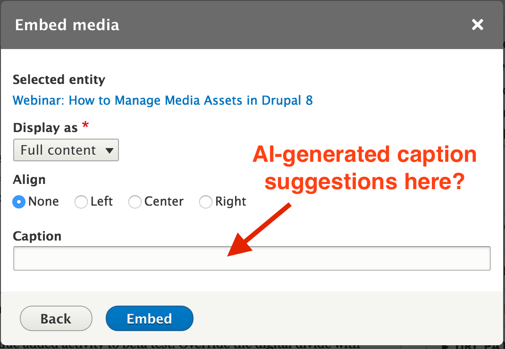

Me
Laura Johnson
Senior Software Developer at Myplanet
<-- Software Developer
Background
Article -->
|
The Data Problem
Real-time Remediation
 |
High-Level Indicator
 |
Content Simplification
Image Recognition
Image Recognition (cont'd)
Image Recognition (cont'd)
Image Recognition (cont'd)
Automated Accessibility Testing Tools
CMS
|  |
The way forward
Myplanet